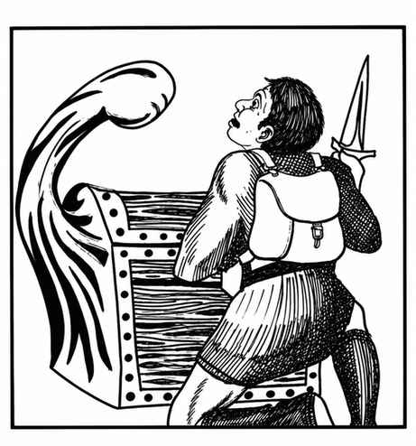

拟态怪 · Mimic
 |
|
拟态怪是无法忍受阳光的地下生物，能完美模仿石头或木头。它们有两种：体型较大、拥有 9–10 骰生命骰且半智能的食肉“杀手拟态怪”，以及稍小而有智慧的普通拟态怪。前者会攻击附近的一切生物；后者若得到食物通常相当友善。所有拟态怪都会不停移动，寻找猎物。
拟态怪会伪装成石工结构、门、箱子或任何能够模仿的物质与物品。当生物触碰它时，拟态怪会伸出假肢，每次造成 3–12 点伤害；同时分泌胶液，将触碰它的肢体牢牢粘住。
杀手拟态怪不会说话，其他种类拥有自己的语言，通常还能说通用语、兽人语等数种语言。只要得到食物，它们通常会告诉冒险者附近所见到的事物。